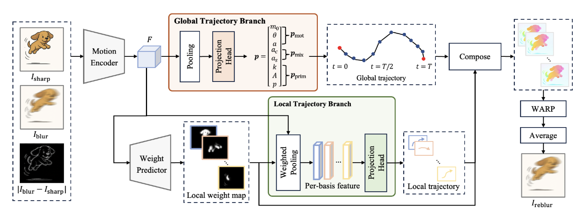

01 / CURRENT RESEARCH
Trajectory-aware Differentiable Blur Augmentation
Image Deblurring · Target: ICLR 2027
Conventional blur augmentation mainly changes motion magnitude or orientation. This work models richer camera and object motion trajectories and learns differentiable perturbations jointly with the deblurring objective.
- Global camera + spatially varying local object motion
- Differentiable warping and temporal blur synthesis
- Learnable augmentation optimized for deblurring generalization
31.37
GoPro 10% PSNR
28.98
HIDE, 10% setting
+2.45
dB vs. baseline

